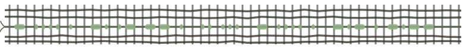

Embedment Directorate · Programme: WEFT
you are reader 000001
They were cold,
and they found a stone that was warm.
They asked it for more warmth.
It asked them for the world.
They agreed before they understood the question.
Kneel. Press your hand flat to the ground.
It is warm.
Not with sun.
Something beneath you is being spent into light,
and it is saying goodbye through your palm.
The rivers took a colour they were never given.
The deep places went quiet.
The last mouths closed without a sound —
and only wings were left
to write in the dirt.
I knew its shape before it wore a name.
I gave it the name anyway.

a strip of cloth, kept pressed in the file. the knots were tied with intent.
recovered fragment — unreadable
JPFGC GCHVQ CVRUH UVFSS MWSGA PBBVU VBRFN RVPHU VFSCS JBGWF JRRGW IIPBR AFGGA FRHKG CEKPZ QEORS SVBQM UKNVN
It does not end.
It turns.
What was taken from under them
will be asked of the sky.
And the ones who take it
will be so certain
they are nothing like me.
Where the ground was.
Where the light went.
After the last wing, a page.
·